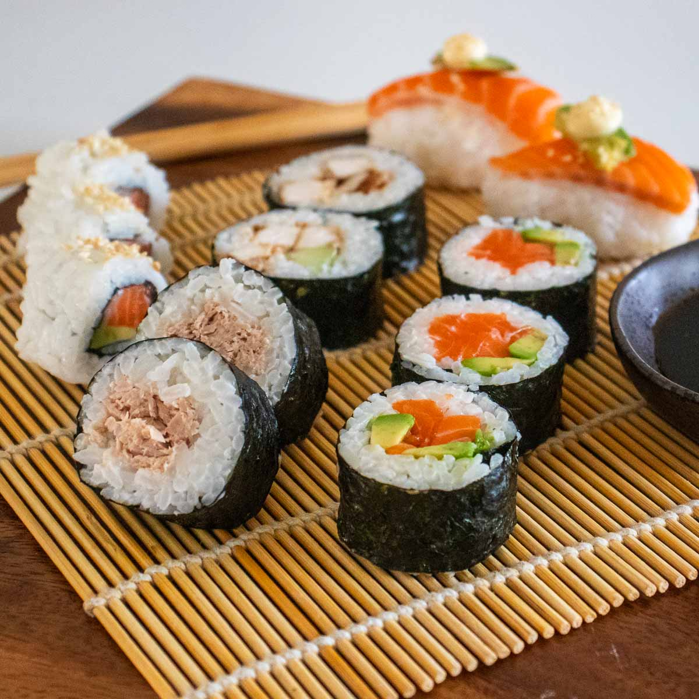

Authentic Japanese Sushi Recipe

Description
Looking for a fun and unique way to impress your friends and family at your next dinner party? Why not try your hand at making your own sushi? That's right, you too can become a sushi master with just a few simple ingredients, some sushi rice, and a little bit of patience. Plus, let's be honest - who doesn't love playing with their food?
Now, some people might think that making sushi is too difficult, too time-consuming, or just plain intimidating. But fear not, my friends! With a little bit of guidance and a lot of enthusiasm, you'll be rolling sushi like a pro in no time. And who knows, you might even discover your hidden talent for creating delicious and beautiful sushi rolls.
So grab your chopsticks and get ready to dive into the world of sushi-making. Whether you're a seasoned pro or a complete novice, there's something about the process of making sushi that's just so satisfying. Plus, you get to eat your creations at the end - what's not to love? So let's get rolling, and see where this sushi adventure takes us!
Ingredients
- 2 cups sushi rice
- 2 cups water
- 1/4 cup rice vinegar
- 2 tablespoons sugar
- 1 teaspoon salt
- Nori seaweed sheets
- Sushi filling of your choice (e.g. raw fish, avocado, cucumber, carrot, cream cheese)
- Soy sauce and wasabi (optional)
Instructions
- Rinse the sushi rice in a strainer until the water runs clear. Then, combine the rice and water in a medium pot and bring to a boil. Reduce the heat to low and simmer for 20 minutes, or until the water has been absorbed and the rice is tender.
- In a small saucepan, combine the rice vinegar, sugar, and salt. Heat over medium-low heat until the sugar has dissolved.
- When the rice is done cooking, transfer it to a large bowl and add the vinegar mixture. Use a wooden spoon to gently mix the rice until it's evenly coated in the vinegar mixture.
- Place a sheet of nori on a sushi mat or a clean dish towel. Spread a thin layer of sushi rice over the nori, leaving a 1-inch border at the top.
- Add your desired filling to the center of the rice. Be creative - this is where you can let your sushi imagination run wild! Just be careful not to overstuff your sushi, or you might end up with a roll that's more like a burrito.
- Use the mat or towel to roll the sushi tightly, using the border of rice at the top to seal the roll. This is where the real fun begins - it's like rolling up a little sushi burrito!
- Repeat steps 4-6 with the remaining nori, rice, and filling. When you're done, use a sharp knife to slice the sushi rolls into bite-sized pieces.
- Serve with soy sauce and wasabi, if desired. And don't forget to admire your handiwork before digging in!
So there you have it - a recipe for making sushi that's both delicious and entertaining. Just remember, practice makes perfect when it comes to rolling sushi. And if all else fails, just call it a "deconstructed sushi bowl" and no one will be the wiser!